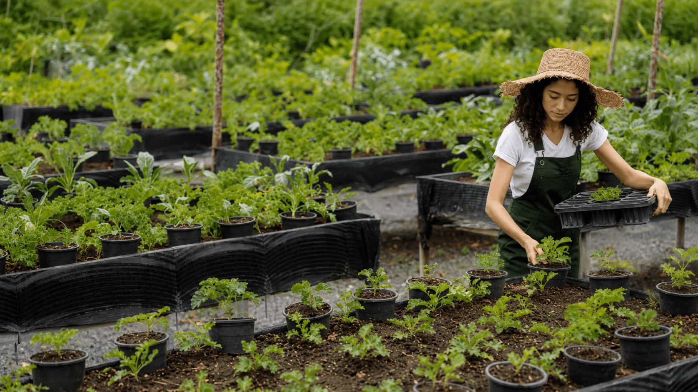
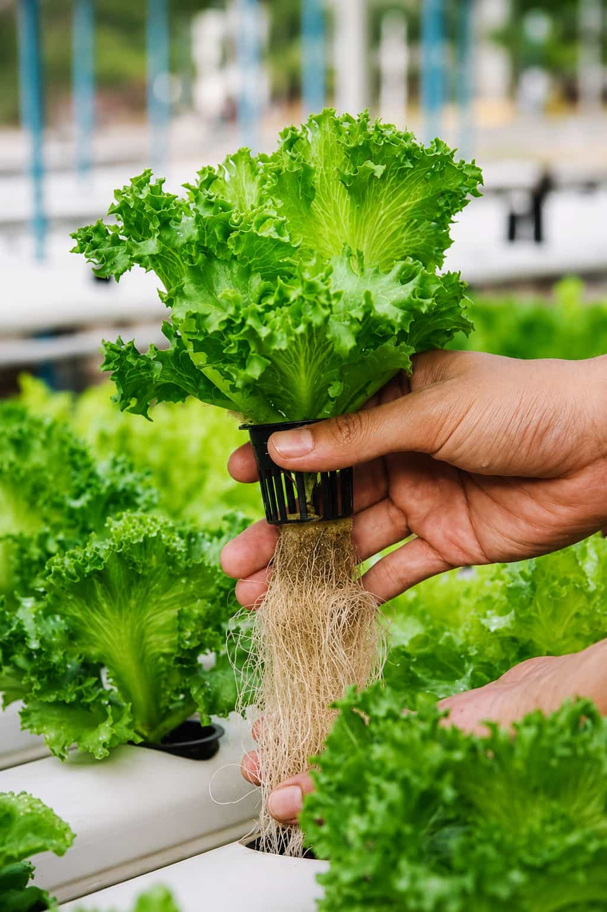
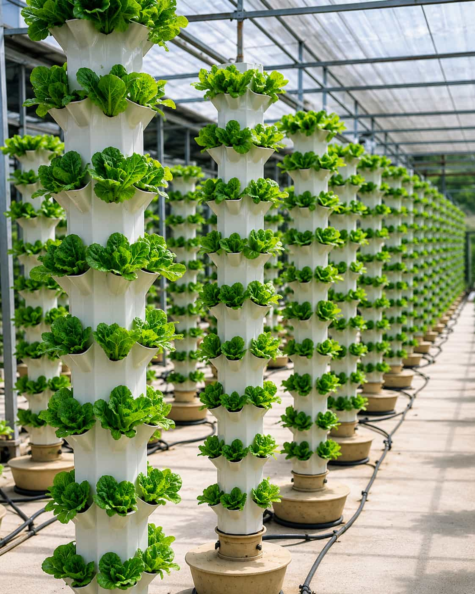

Make the Starting Point Easier to Understand
We connect crop, space, system, lighting, watering, media, and routine considerations in one accessible editorial platform.
Explore the guide structure
We organize clear information for people exploring crops, systems, equipment, and routines in limited urban spaces.
Indoor growing information can become difficult to compare when crops, equipment, environmental conditions, and commercial ambitions are discussed without practical context.
Growwise Urban brings those connected decisions into clearer, beginner-friendly guides without presenting one method as universally right.
See how the guides are organized


Useful guidance should explain both possibilities and practical limitations.
Urban farming can involve exciting possibilities, but useful information should not hide the limits of space, time, maintenance, equipment, crop selection, or environmental control.
Our role is to organize practical questions, comparisons, and starting points so readers can explore a setup with more context before making decisions.
We connect crop, space, system, lighting, watering, media, and routine considerations in one accessible editorial platform.
Explore the guide structureGuides should be understandable for beginners while remaining relevant to people considering more organized home or small-commercial projects.
Read our content principlesThe platform supports readers with different goals without assuming the same crop, method, budget, or level of experience will fit everyone.

Explore crops, containers, lighting, watering, airflow, and equipment placement in everyday living spaces.
Start with the space, crop, environment, maintenance routine, and broad system differences.
Open the starter guides
Consider workflow, maintenance, consistency, available space, costs, local requirements, market context, and realistic limitations.
A promising idea becomes more practical when the available growing area, crop needs, equipment layout, and recurring maintenance tasks are considered together.
The platform helps readers move through those questions without guarantees, exaggerated claims, or the assumption that a more complicated system is automatically a better one.


Each topic is easier to understand when it remains connected to the conditions and routines around it.
Learn the role of each crop, system, input, condition, and recurring task.
Review broad differences, trade-offs, limitations, and space-specific considerations.
Build a manageable starting path around the area and routine you can maintain.

Explore advertising opportunities, joint educational projects, workshops, consultations, and other tailored collaboration formats.
Discuss relevant brand visibility and tailored promotional concepts for the platform’s audience.
Explore content, guide, event, and learning concepts built around clearly defined goals.
Send information about the format, audience, topic, and context you are considering. Availability may vary.